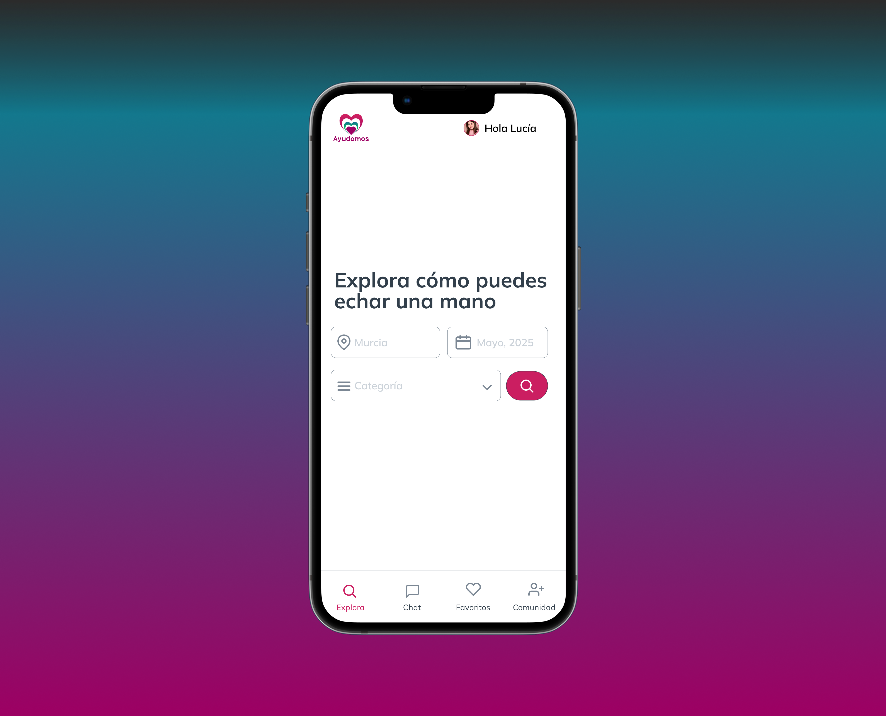
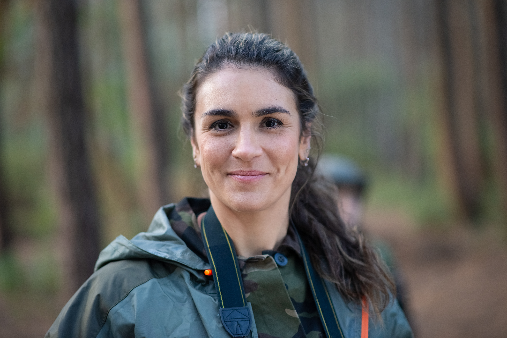
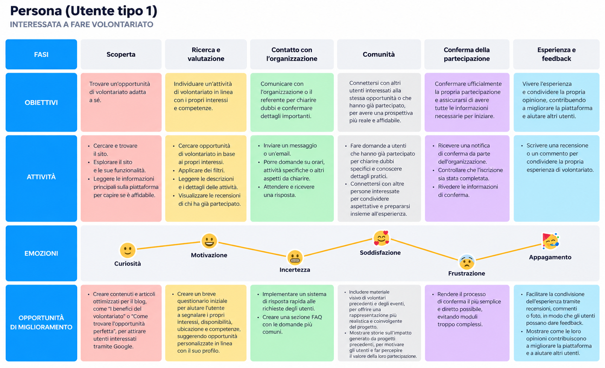
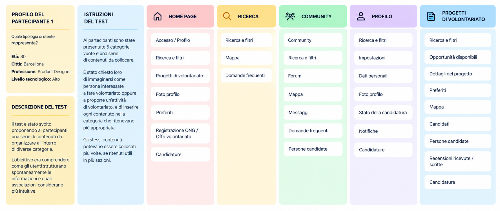
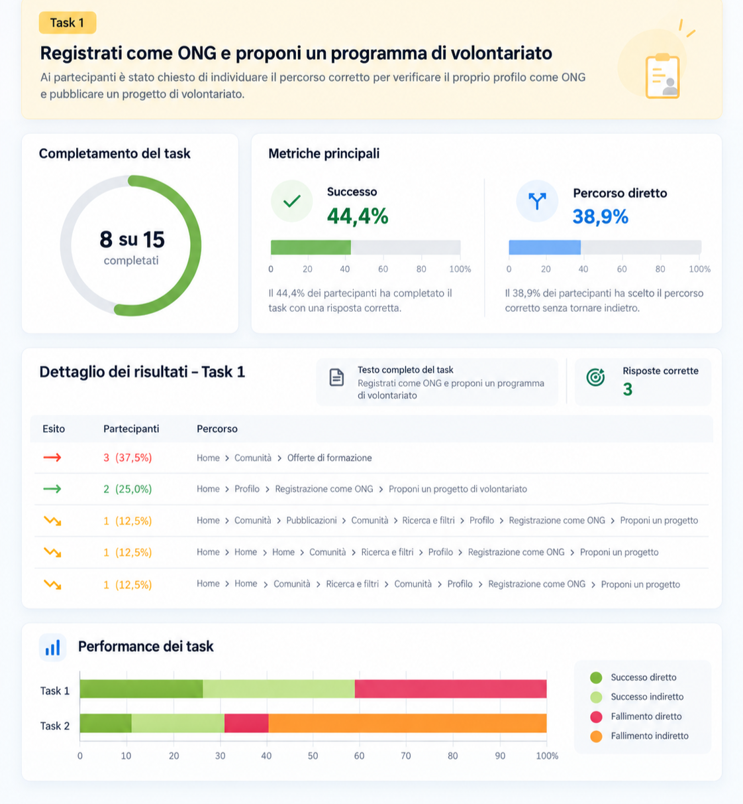
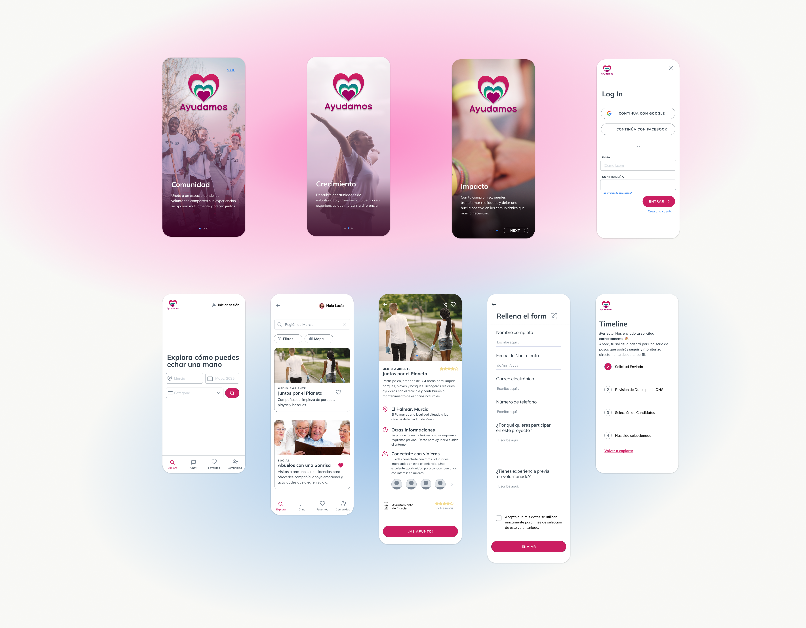

01
Contesto
Ayudamos nasce come applicazione mobile progettata per facilitare l'incontro tra persone interessate al volontariato e organizzazioni non profit, digitalizzando la ricerca e la pubblicazione delle opportunità.
UX/UI Design · Mobile App · 2024
Progettare un'esperienza più semplice per connettere volontari e organizzazioni non profit.

Overview
01
Ayudamos nasce come applicazione mobile progettata per facilitare l'incontro tra persone interessate al volontariato e organizzazioni non profit, digitalizzando la ricerca e la pubblicazione delle opportunità.
02
Creare una piattaforma gratuita capace di mettere direttamente in contatto volontari e organizzazioni, rendendo la ricerca delle opportunità più semplice e trasparente.
03
Inserirsi in un mercato in cui esistono già diverse piattaforme, individuando una proposta capace di distinguersi attraverso semplicità, trasparenza e organizzazioni verificate.
Il processo
Research
Define
Architecture
Test
Design
01 · Research
La fase di ricerca è partita dall'analisi del mercato e delle soluzioni esistenti, per poi approfondire bisogni e difficoltà attraverso il confronto diretto con volontari e organizzazioni.
01
Ho analizzato diverse piattaforme dedicate al volontariato per comprenderne struttura, funzionalità e modalità di ricerca delle opportunità.
02
La ricerca desk ha permesso di approfondire il contesto del volontariato digitale e individuare elementi utili alla definizione dell'esperienza.
03
Interviste
Ai volontari
Alle organizzazioni
02 · Key insights
Il confronto con volontari e organizzazioni ha permesso di individuare gli aspetti più rilevanti su cui concentrare la progettazione dell'esperienza.
Emergono quattro pilastri chiave per la piattaforma: un motore di ricerca gratuito, intuitivo e ricco di filtri, un sistema di recensioni per costruire fiducia e fidelizzazione, funzionalità per favorire la connessione e la collaborazione tra gli utenti, e un sistema di profili per abilitare funzioni salvautente e un'esperienza personalizzata.
Per valorizzare i volontari, motivati principalmente da valori altruistici, crescita personale e socializzazione, le organizzazioni devono garantire una formazione adeguata, ruoli chiari che non sovrappongano volontariato e lavoro dipendente, e una gestione strutturata per rafforzare impegno, fiducia e soddisfazione a lungo termine.
Il settore soffre di una mancanza di trasparenza e piattaforme affidabili, ostacolato da barriere economiche (costi di viaggio e soggiorno) e dalla necessità di maggior supporto burocratico e logistico. Per mobilitare chi desidera fare la differenza in questo ambito, è fondamentale valorizzare l'opportunità di crescita personale e culturale, garantendo un accompagnamento strutturato in ogni fase.
03 · Define
Gli insight raccolti durante la ricerca sono stati sintetizzati in una persona, utile per mantenere bisogni, obiettivi e frustrazioni dell'utente al centro delle successive decisioni progettuali.
User Persona

User Journey
La User Journey ha permesso di rappresentare il percorso dell'utente e individuare i principali punti di frizione su cui intervenire durante la progettazione.

04 · Information Architecture
Dopo aver definito bisogni e priorità degli utenti, il lavoro si è concentrato sulla struttura dell'informazione, verificando come organizzare contenuti e funzionalità in modo chiaro e comprensibile.
01
Il Card Sorting è stato utilizzato per osservare come gli utenti raggruppavano spontaneamente contenuti e funzionalità, aiutando a definire una struttura più vicina ai loro modelli mentali.


02
La struttura è stata poi validata attraverso un Tree Test, condotto tramite la piattaforma UXtweak, verificando quanto fosse semplice per gli utenti individuare le informazioni richieste all'interno dell'architettura. I risultati hanno mostrato un tasso di successo del 78% per le prime due attività e del 44% per le successive, consentendoci di ottimizzare le sezioni più problematiche prima dell'implementazione finale.
05 · UI Design
Dopo aver definito e validato la struttura dell'esperienza, il progetto è stato sviluppato direttamente in alta fedeltà, traducendo flussi e contenuti in un'interfaccia coerente, chiara e pronta per la prototipazione.

06 · Learnings
Il Card Sorting e il Tree Testing mi hanno permesso di verificare la struttura dell’esperienza prima di arrivare all’interfaccia finale.
Le interviste hanno aiutato a trasformare esigenze e difficoltà degli utenti in decisioni progettuali più consapevoli.
Il progetto mi ha mostrato quanto la qualità dell’interfaccia dipenda dalle decisioni prese nelle fasi precedenti del processo UX.
Scrivimi per collaborazioni, opportunità o per parlare di design, prodotto e comunicazione.
Contattami ora